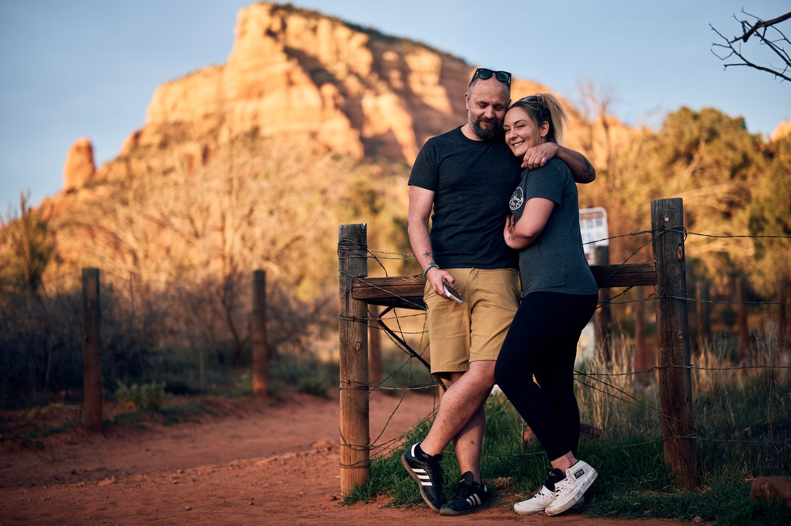

Annotated contact sheet
Selections, rejects, and frame-by-frame notes from the midnight feature, including what changed between the shot that stayed and the ones that fell off.
IncludedOpen
Selections, rejects, and frame-by-frame notes from the midnight feature, including what changed between the shot that stayed and the ones that fell off.

Road-tuned film simulations with exposure notes for sodium vapor, gas station neon, predawn blue, and desert white.

A mock internal tool with ratings, route notes, overnight tags, and utility classifications for repeatable overnight stops.

Why the homepage is sequenced the way it is, how the stories are grouped, and where the magazine/shop crossover is meant to happen.